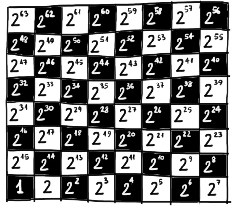

Nella formazione di Dante è sicuramente presente la matematica, intesa come geometria euclidea e, forse,
come aritmetica: proprio in quegli anni i maestri d'abaco fiorentini introducevano le cifre arabe, che
avrebbero permesso di sviluppare algoritmi più efficienti di calcolo.
Di seguito sono riportati alcuni dei passi della Divina Commedia nei quali Dante cita esplicitamente la matematica.
Prima citazione
Paradiso Canto XXVIII versi 91-93
L'incendio suo seguiva ogne scintilla;
Ogni angelo (scintilla) continuava a girare (seguiva) insieme al suo cerchio infuocato (L’incendio suo);
ed eran tante, che 'l numero loro
e il loro numero era così alto (eran tante)
più che 'l doppiar de li scacchi s'inmilla
che si moltiplicava (s’inmilla) più che la progressiva duplicazione (più che ’l doppiar) degli scacchi.
In questi versi Dante cerca di individuare un'immagine in grado di far percepire al lettore il numero sconfinato
di angeli al cospetto dei quali si trova.
La suggestione più efficace arriva dalla matematica delle
esponenziali,
espressa attraverso una storia nota ai tempi del poeta.
Una leggenda di origine indiana narra che Sissa Nassir inventò il gioco degli scacchi per farne dono al
principe di Persia. Questi, in gesto di riconoscenza, promise al suo servitore di ricompensarlo
esaudendo qualsiasi desiderio avesse espresso. Sissa Nassir chiese al sovrano di ricevere tanto riso quanto
se ne ottiene riempendo ogni casella degli scacchi con il doppio dei chicci contenuti nella casella precedente,
iniziando con il riempire con un chicco la prima casella.
Facciamo un conto:

Quindi il numero totale di riso richiesto da Sissa Nassir è
\[
Q := 1 + 2 + 2^2 + 2^3 + \,\,\cdots\,\, + 2^{63}
\]
Per trovare qual è il valore della somma senza dovrela effettuare addendo per addendo, giochiamo di astuzia.
Partiamo dalla seguente uguaglianza (alla quale in seguito ci riferiremo attraverso il simbolo
\(\color{rgb(255, 0, 255)}{}(*)\))
\[
(x - 1)(1 + x + x^2 + x^3 + \,\,\cdots\,\, + x^{63}) \,=\, x^{64} - 1
\]
Infatti
\[
\begin{align*}
&(\color{blue}{}x \color{red}{} - 1\color{black}{})(1 + x + x^2 + x^3 + \,\,\cdots\,\, + x^{63}) =
\\\\
= & \,\,\,\color{blue}{}x + x^2 + x^3 + x^4 + \,\,\cdots\,\, + x^{64} \color{black}{}+
\\
& \color{red}{}-1 - x - x^2 - x^3 - \,\,\cdots\,\, - x^{63} \color{black}{}=
\\\\
= & \,\,\,x^{64} - 1
\end{align*}
\]
Sostituendo \(2\) al posto della \(x\) nell'uguaglianza \(\color{rgb(255, 0, 255)}{}(*)\) otteniamo che
\[
\begin{align*}
&(2 - 1)(1 + 2 + 2^2 + 2^3 + \,\,\cdots\,\, + 2^{63}) \,\,=\,\, 2^{64} - 1
\\\\
&\underset{Q}{\color{gray}{\underbrace{\color{black}{}1 + 2 + 2^2 + 2^3 + \,\,\cdots\,\, + 2^{63}}}} \,\,=\,\, 2^{64} - 1
\\\\
&Q \,\,=\,\, 2^{64} - 1 = 18\,446\,744\,073\,709\,551\,615
\end{align*}
\]
Il numero di chicchi di riso richiesto da Sissa Nassir era talmente elevato che il suo desiderio
non poteva essere esaudito neanche dando fondo al raccolto di un intero anno.
Esistono due vulgate della leggenda: nella prima, compiaciuto della scaltrezza del suo servitore,
il re lo nominò governatore di una delle province del regno; diametralmente opposta la seconda, nella
quale si narra che, indispettito dall'insolenza di Sissa Nassir, il re lo pone a processo perché sia giustiziato.
Nel citare questa storia, Dante la esaspera, scrivendo
più che 'l doppiar de li scacchi s'inmilla
intendendo che il numero delle schiere angeliche ad ogni istante si
immillava (moltiplicava
per mille), più che il raddoppiarsi dei chicchi di grano sulla scacchiera.
Gustave Doré, geniale illustratore dell' '800,
rappresentò la visione di Dante in una delle opere che lo resero più celebre, riportata di seguito.

Seconda citazione
Paradiso Canto XIII versi 96-102
Non ho parlato sì, che tu non posse
Non ho parlato in modo che tu non possa
ben veder ch'el fu re, che chiese senno
capire che egli fu re, e che chiese la sapienza
acciò che re sufficiente fosse;
per svolgere in modo adeguato il suo ufficio di sovrano;
non per sapere il numero in che enno
(chiese la sapienza) non per sapere
li motor di qua sù, o se necesse
il numero degli angeli, o se una premessa necessaria
con contingente mai necesse fenno;
e una contingente hanno mai prodotto una conseguenza necessaria
non si est dare primum motum esse,
non per sapere se è ammissibile un primo moto non generato da altro moto,
o se del mezzo cerchio far si puote
o se in un semicerchio si può
triangol sì ch'un retto non avesse.
inscrivere un triangolo non rettangolo.
Il teorema citato da Dante è un corollario della
Proposizione 20 del libro III degli Elementi di Euclide,
che per secoli sono stati il testo di riferimento fondamentale per la matematica.
Corollario (Proposizione 20 - Libro III)
Un triangolo è rettangolo
se e solo se
è inscrivibile in una semicirconferenza
Trascinate il punto blu. Comunque il punto prenda posizione sulla semicirconferenza, il
triangolo ottenuto ha un angolo di \(90°\) con vertice nel punto blu, ovvero è rettangolo.
Terza citazione
Paradiso Canto XVII versi 13-18
O cara piota mia che sì t'insusi,
O caro mio capostipite, che ti innalzi
che, come veggion le terrene menti
a tal punto che, come le menti terrene vedono
non capere in triangol due ottusi,
che in un triangolo non possono esserci due angoli ottusi,
così vedi le cose contingenti
così vedi le cose contingenti
anzi che sieno in sé, mirando il punto
prima che avvengano, osservando il punto (la mente di Dio)
a cui tutti li tempi son presenti;
in cui è un eterno presente;
In questo caso Dante fa riferimento alla
Proposizione 17 del primo libro degli Elementi:
Proposizione 17 - Libro I
Dato un triangolo generico, la somma di una qualsiasi coppia di angoli interni è minore
di 180°.
Trascinate i vertici del triangolo per modificarlo. Per ogni triangolo individuato, la somma degli
angoli \(\widehat{A}\) e \(\widehat{B}\) (mostrata in alto a sinistra) è minore di \(180\)°.